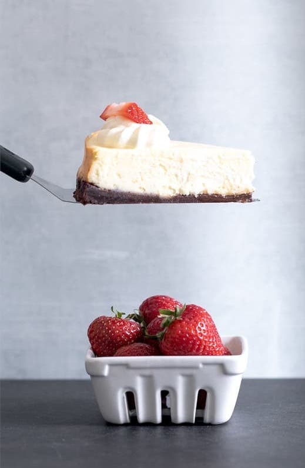

Gluten Free Cheesecake

Description
This classic gluten free cheesecake is technically a “plain” cheesecake, but the taste and texture make it anything but plain. It's smooth and silky, and each bite tastes light and creamy.
Equipment
- 19 inch Springform Pan
- Stand Mixer
Ingredients
- 1 ½ cups (225 g) gluten free graham crackers crushed
- 8 tablespoons (112 g) unsalted butter melted
- 3 8-ounce (24 ounces) packages cream cheese at room temperature
- ¾ cup (150 g) granulated sugar
- 3 tablespoons (27 g) cornstarch
- ¼ teaspoon kosher salt
- 1 ½ teaspoons pure vanilla extract
- 3 (150 g (weighed out of shell)) eggs at room temperature
Instructions
- Preheat your oven to 300°F. Grease well a 9-inch springform pan and line the bottom with a 9-inch round of parchment paper.
- Pour 2 cups of hot water into a roasting pan or oven-safe casserole dish and place it on the bottom rack of the oven as it heats.
- In a medium-size bowl, place the cookie crumbs and melted butter and mix until the crumbs are moistened. Press the crumbs into the bottom and halfway up the sides of the prepared pan. Set the pan aside.
- In a large bowl with a hand mixer or the bowl of a stand mixer fitted with the paddle attachment, place the cream cheese, sugar, cornstarch, salt, and vanilla, and beat on high speed until very light and fluffy.
- Scrape down the sides of the mixing bowl at least once, and continue to beat. With the mixer on medium-low speed, add the eggs one at a time and mix just until smooth.
- Place the pan on the top rack of the preheated oven, and bake for 50 minutes, or until most of the cake is set, but the 2 inches in the center are still somewhat loose when shaken from side to side. If necessary, close the oven door and continue to bake for another 5 to 10 minutes.
- Once the cake is baked, turn off the oven and crack the oven door a bit, leaving the cake inside. Allow the cake to sit for about 30 minutes or until the oven temperature has reached about 200°F.
- Remove the cake from the oven and allow to reach room temperature. Cover and chill the cake, still in the pan, until ready to serve.
- Unmold the chilled cake and loosen the bottom from the pan. Transfer the cake carefully to a serving platter, slice with a hot, wet knife, cleaned between each cut, and serve chilled.